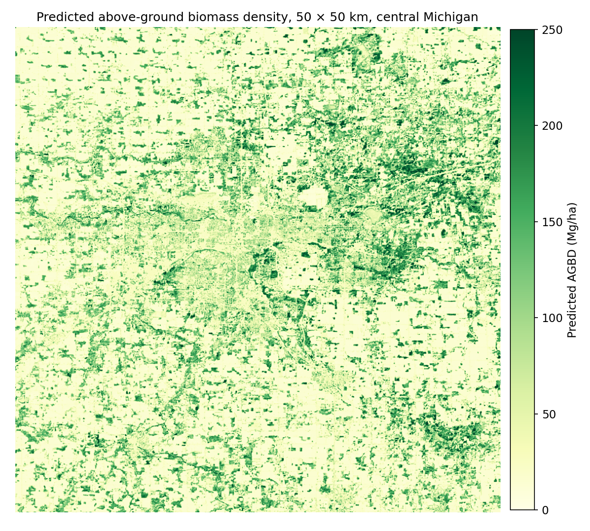
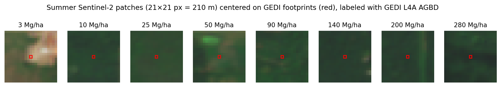
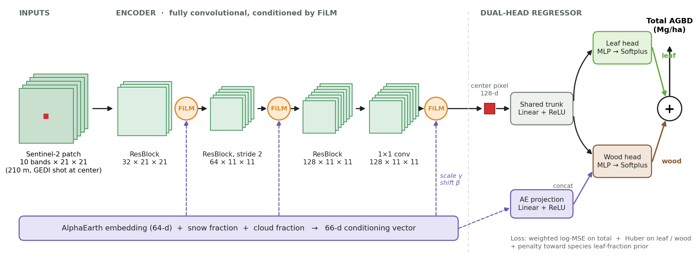
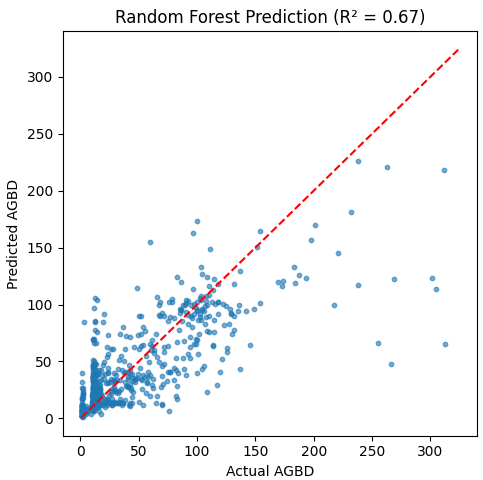
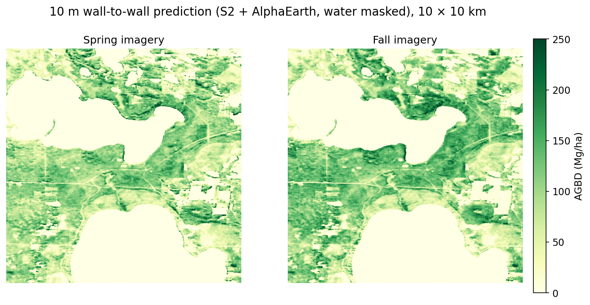
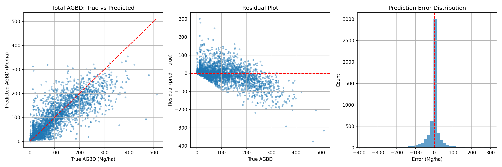
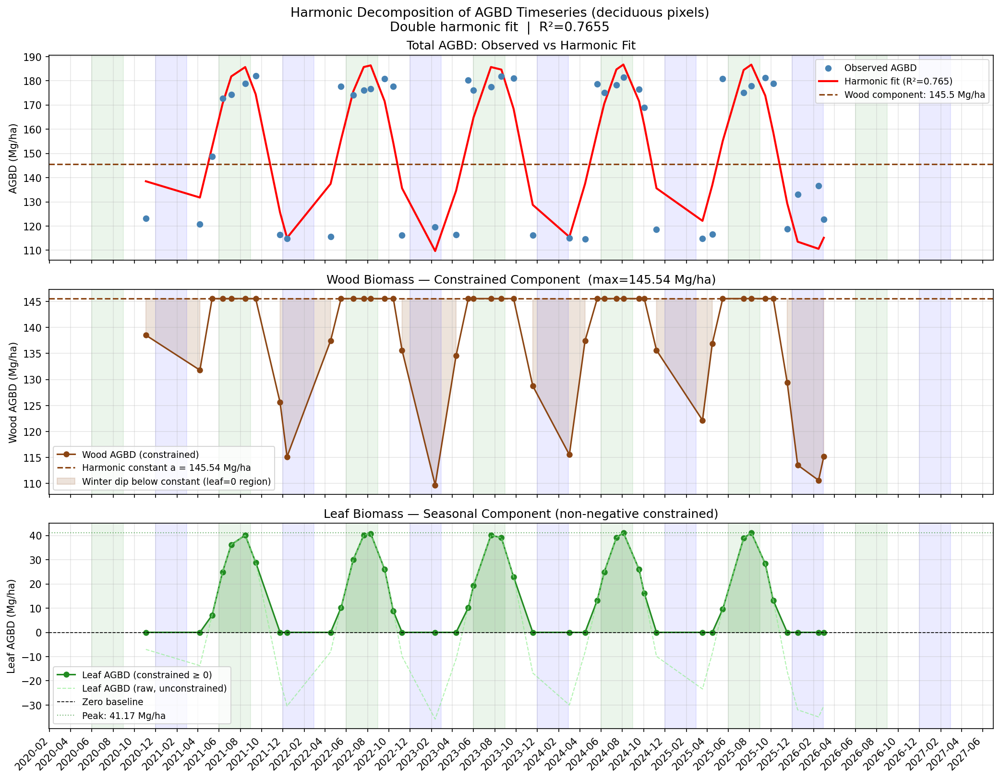
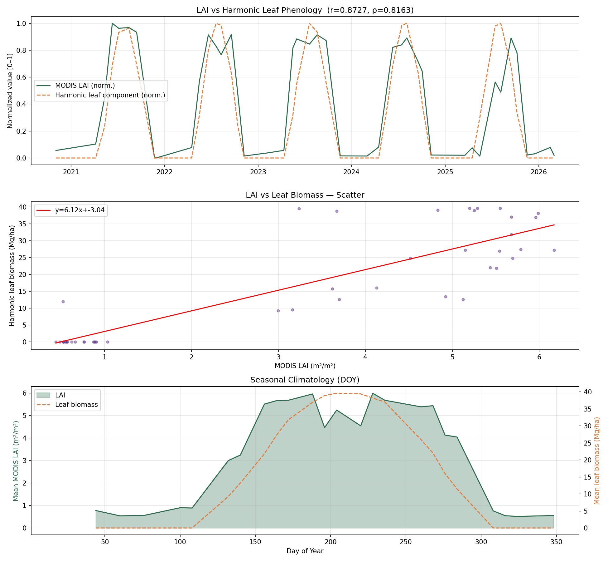
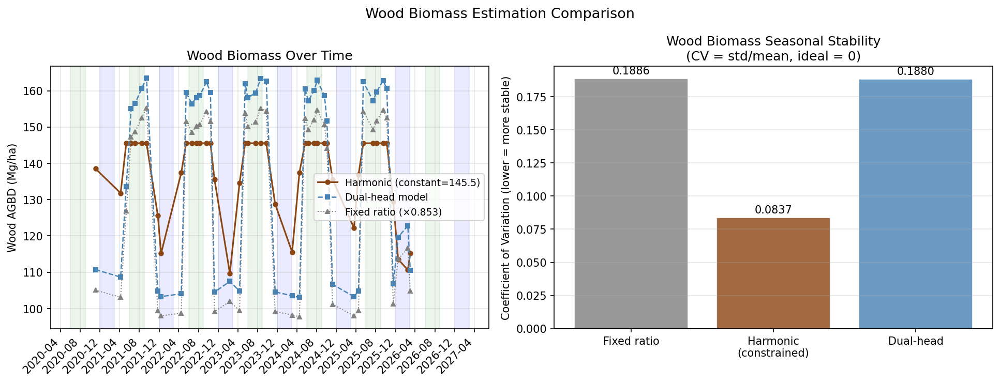

Mapping forest biomass from space at 10 m resolution
An end-to-end, multimodal pipeline that learns above-ground biomass density (AGBD) from sparse spaceborne lidar and turns it into wall-to-wall maps of Michigan. It fuses Sentinel-2 imagery and Google AlphaEarth embeddings, then splits biomass into leaf and wood using species-level allometry and phenology.
Code & trained weights on GitHub How to get the data Architecture diagram (draw.io)

The problem
Forest biomass is central to carbon accounting, but measuring it directly is expensive. NASA's GEDI lidar on the International Space Station measures canopy structure and estimates biomass very well, but only in scattered 25 m footprints along orbit tracks, and most of the land is never sampled. Optical satellites like Sentinel-2 see everything every few days, but can't directly measure vertical structure.
This project trains a model to predict GEDI's biomass from what Sentinel-2 and a learned Earth-observation embedding see around each footprint. The model is then applied to every 10 m pixel to produce continuous maps. A second stage asks a harder ecological question: how much of that biomass is leaves, and how much is wood?
Data
| Source | Role | Details |
|---|---|---|
| GEDI L4A (v2.1) | Labels | Footprint AGBD for 2024–2025, quality-filtered (L4 / L2 quality flags, degrade flag), within a 350 km radius of central Michigan |
| Sentinel-2 L2A | Primary input | 10 bands (B02–B12) as 21 × 21 px patches (210 m) per footprint; scene classification (SCL) layer for cloud and snow masks; spring, summer and fall composites |
| AlphaEarth Foundations | Context input | 64-dimensional annual (2024) embedding per location, exported from Google Earth Engine |
| NLCD 2024 | Land cover | Forest type (deciduous, evergreen, mixed) and water masking |
| USFS TreeMap 2022 | Leaf prior | Per-pixel FIA plot imputation of tree species and stem density |
| BAAD + Jenkins et al. | Leaf prior | Measured and allometric leaf-to-total mass ratios per species |
| MODIS MCD15A2H | Validation | 8-day leaf area index, 2020–2026 |
| ETH canopy height, SRTM, Daymet | Explored | Used in the random-forest baseline and early CNN versions |

Pipeline
Collect & filter
Parse GEDI HDF5 beams, apply quality flags, and download Sentinel-2 tiles and auxiliary rasters.
Common grid
Reproject everything to equal-area EPSG:6933, mosaic tiles, and snap AlphaEarth onto the S2 grid.
Patch extraction
Cut a 21 × 21 patch per footprint, check validity on every layer, and drop no-data or cloudy patches.
CNN regression
Train a ResNet-style fully convolutional network with AlphaEarth FiLM conditioning and a weighted log-space loss.
Tiled inference
Run overlapping sliding-window inference over full scenes and write cloud-masked 10 m GeoTIFFs.
Leaf-fraction map
Combine TreeMap species, BAAD and Jenkins ratios on the NLCD forest mask to get per-pixel leaf fraction.
Seasonal series
Predict 45 cloud-free dates from 2020–2026 and fit a two-term harmonic model.
Independent check
Compare the seasonal leaf signal against MODIS LAI.
Model
The core network is a compact fully convolutional encoder over the Sentinel-2 patch. The AlphaEarth vector, plus per-patch snow and cloud fractions, conditions every stage through FiLM (feature-wise linear modulation), so the embedding shifts and scales the image features rather than simply being concatenated at the end. The FiLM layers are zero-initialized, so the network starts as a plain image model and learns how much to rely on the embedding. Biomass is predicted from the feature vector at the center pixel, which lets the same network run as a dense sliding-window map at inference time.

Training details: AdamW (lr 1e-3, weight decay 3e-4) with a reduce-on-plateau schedule and gradient clipping. Patches whose center pixel is cloudy, or that are more than 20% cloud, are dropped. AlphaEarth is normalized using training-split statistics only. Because AGBD is heavily right-skewed (median 16, mean 63, max 575 Mg/ha), the total-biomass loss is MSE in log space with extra weight on high-biomass samples, so the model doesn't collapse toward the many low-biomass shots. I also ran grid and Optuna hyperparameter searches.
Results
| Model | Test data | RMSE (Mg/ha) | RMSE ÷ target std | R² |
|---|---|---|---|---|
| Predict the mean | Current (std ≈ 79) | 78.7 | 1.00 | 0.00 |
| Random forest: canopy height, SRTM, Daymet, NLCD at the footprint pixel | Earlier subset (std ≈ 41) | 23.6 | 0.58 | 0.67 |
| CNN, S2 + AlphaEarth (single head) | Current (std ≈ 79) | 37.6–39.7 | 0.48–0.50 | 0.75–0.77 |
| CNN, S2 + AlphaEarth (dual head) | Current (std ≈ 79) | 37.1 | 0.47 | 0.78 |
Why the random forest has a lower RMSE but a lower R². RMSE is in Mg/ha, so it scales with how spread out the test targets are. The random forest was scored on an earlier, smaller subset with few high-biomass shots (target std ≈ 41 Mg/ha), while the CNN's test set spans the full range (std ≈ 79 Mg/ha). R², or equivalently RMSE divided by the target standard deviation, corrects for that. On that scale the CNN's error is about 20% lower relative to the spread of the data (0.47 vs. 0.58). The dual-head CNN's MAE is 18.7 Mg/ha. A random forest re-run on the CNN's exact test split would make the comparison direct.





Separating leaves from wood
Total biomass hides an important split: leaves cycle carbon every year, while wood stores it for decades. I explored two complementary ways to separate them.
1 · Species-based leaf-fraction prior
For every forest pixel in Michigan (about 40 million NLCD pixels), I looked up the TreeMap 2022 plot's species list, weighted each species by stem density, and assigned a leaf-to-total mass ratio. The ratio comes from measured BAAD data where available and from Jenkins et al. allometric component ratios otherwise. Species names were reconciled across the two databases, and unmatched pixels fall back to their NLCD-class mean.
| Forest type | Pixels | BAAD only | BAAD + Jenkins |
|---|---|---|---|
| Deciduous (NLCD 41) | 29.6 M | 0.150 | 0.084 ± 0.048 |
| Evergreen (NLCD 42) | 6.6 M | 0.230 | 0.124 ± 0.072 |
| Mixed (NLCD 43) | 4.3 M | 0.180 | 0.102 ± 0.060 |
Adding Jenkins allometry roughly halved the leaf fractions. BAAD over-represents small and young trees, which carry proportionally more foliage, so the combined estimate is more representative of mature Michigan stands.
2 · Phenology from a 6-year time series
I ran the trained model on 45 cloud-free Sentinel-2 dates (2020–2026) over a deciduous study area and fit a two-term harmonic regression (R² = 0.77). The constant term is read as the season-invariant wood component (≈145 Mg/ha), and the non-negative seasonal oscillation as leaf phenology, peaking around day 209 (late July).

To check this against an independent source, I compared the seasonal leaf signal with MODIS leaf area index over the same area. The two track closely: Pearson r = 0.87, Spearman ρ = 0.82. Green-up, peak and senescence timing all line up.


Next steps
- Spatial cross-validation. GEDI shots are about 60 m apart along a track, so a random split puts overlapping patches in both train and test. Evaluating by held-out orbit tracks or spatial blocks gives a more honest estimate of how well the maps work in new areas.
- Stratified metrics for forest pixels and by biomass bin, since half of the samples are under 20 Mg/ha.
- Ablations: S2-only vs. S2 + AlphaEarth, and single-season vs. multi-season stacks as model inputs.
- Per-pixel leaf prior in training: sample the TreeMap/BAAD/Jenkins map at each GEDI footprint instead of class-level averages.
- Uncertainty: propagate GEDI L4A standard errors and ensemble variance into the output maps.
Tech stack
Python · PyTorch (CUDA) · rasterio · GDAL · geopandas · pyproj · h5py · xarray / rioxarray · scikit-learn · Optuna · NumPy / pandas · SciPy · Matplotlib · Google Earth Engine · NASA Earthdata / AppEEARS